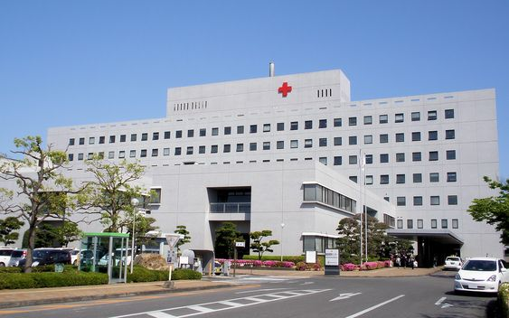

Sobre Nossa Unidade
Estrutura Hospitalar
O Hospital +VIDA ocupa uma área construída de 46.000 m², com 13 andares e um heliponto. São 460 leitos, sendo 80 de CTI, e 16 salas de cirurgias. O +VIDA tem perfil de atenção em urgência e emergência clínica, cirúrgica e AVC com atendimento referenciado e regulado pela Central de Internação. Como não tem pronto-socorro, o Hospital não atende pacientes sem encaminhamento da Central de Internação. O Hospital é também referência para a Rede SUS-BH e para o Estado no atendimento de alta complexidade nas seguintes especialidades: clínica médica, ortopedia, cirurgia geral, cirurgia vascular, neurocirurgia, neurologia e urologia.
Oferta de atendimento
O +VIDA conta com 460 leitos e 16 salas de cirurgia. São 220 leitos de clínica médica, 100 leitos cirúrgicos, 80 leitos de CTI, 35 leitos de AVC, 10 leitos de decisão clínica e 15 leitos de Hospital Dia. A capacidade de atendimento mensal do Hospital é de 1.500 internações por mês, sendo 600 delas cirúrgicas, 8 mil exames de imagem/mês e 75 mil exames laboratoriais.
Exames no +VIDA
O Hospital conta com uma moderna e completa estrutura para exames de média e alta complexidade: angiografia, anngiotomografia, biópsia guiada por imagem, colonoscopia, endoscopia, gastrostomia, CPRE, ecocardiografia, Raio X, tomografia, ultrassonografia e arteriografia diagnóstica e terapêutica (neurocirurgia e cirurgia vascular). A oferta de exames é regulada pela Central de Marcação de Consultas e Exames da Secretaria Municipal de Saúde (SMSA-BH).